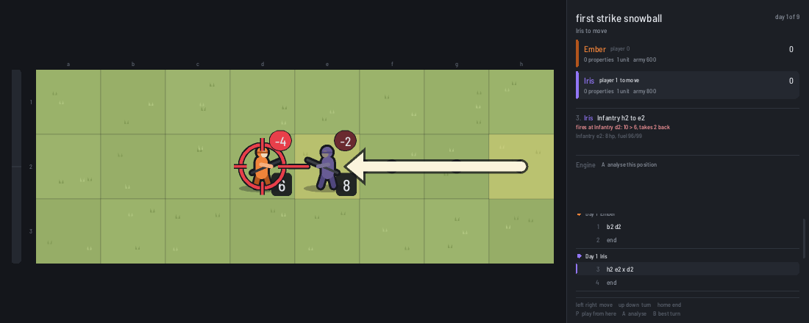
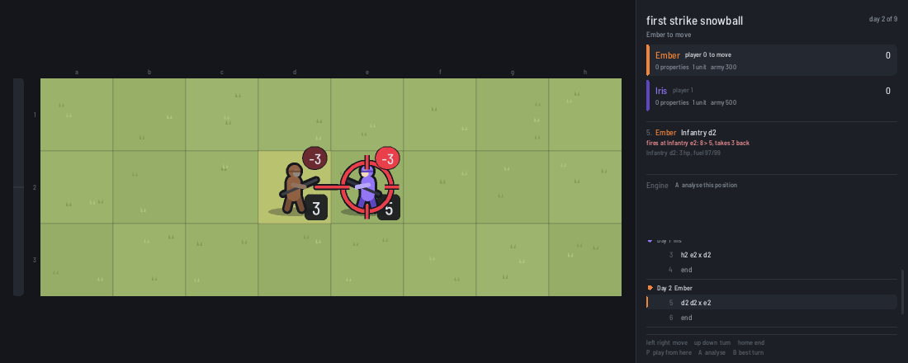
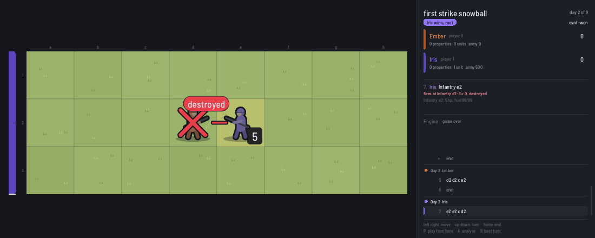
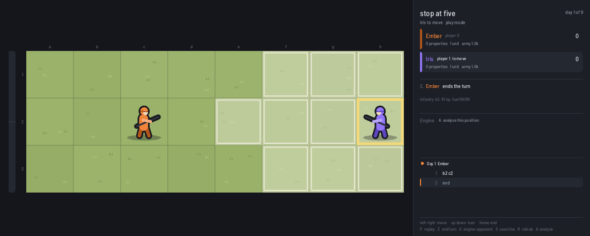
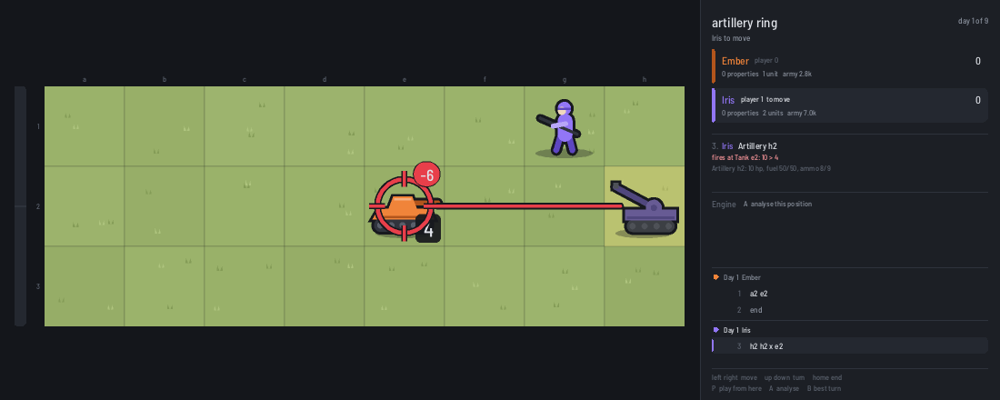
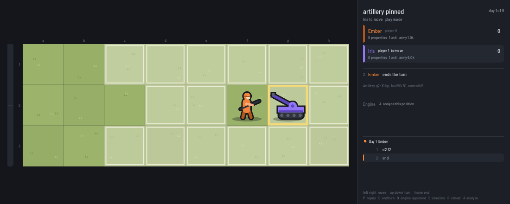
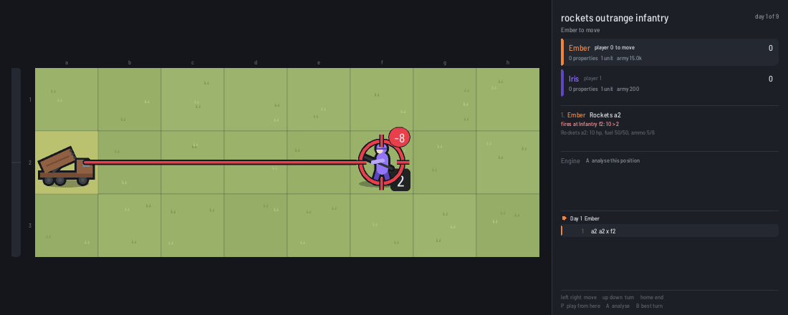
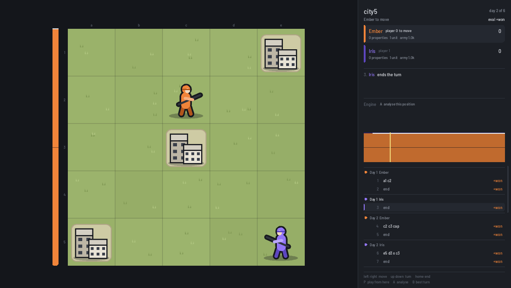

Advance Wars, as the engine sees it
1. Threat range is the whole game
A unit can attack anything it could stand next to this turn. So the tiles it threatens are its move plus its attack reach. Indirect units can't move and fire in the same turn, so they only threaten their firing ring from where they stand.
| unit | move | reach | threatens |
|---|---|---|---|
| Infantry | 3 | 1 | 4 tiles (less over rough terrain) |
| Mech | 2 | 1 | 3 (mountains cost it only 1) |
| Tank, Neotank, Anti-Air | 6 | 1 | 7 on roads and plains |
| Md.Tank | 5 | 1 | 6 |
| Recon | 8 | 1 | 9 on roads (tires hate forests) |
| Artillery | 5 | 2-3 | only its 2-3 ring, from where it stands |
| Rockets | 5 | 3-5 | only its 3-5 ring |
| B-Copter | 6 | 1 | 7, over anything |
| Battleship | 5 | 2-6 | only its 2-6 ring |
Real movement is measured in move points (woods cost treads 2, mountains block them), and your own units don't block you while enemy units do. But the rule of thumb holds: know the number for every enemy unit on the board.
2. The first strike decides even fights
Combat isn't symmetric. The attacker hits at full strength. The defender counters with whatever hit points it has left, and a hurt unit hits weaker. Two full infantry on plains:



With no luck roll, an even 1-vs-1 fight is decided before it starts: whoever gets the first hit wins it. With luck on, it's very likely rather than certain.
3. Don't step in: the standoff
Section 2 has a sting. To attack on your turn, the enemy has to be inside your threat range when your turn starts. If you walk into its threat range and stop, it gets the first strike.

Two equal armies that can both play this way will wait forever. You can always end your turn without moving, so unlike chess nobody is ever forced to step in. The exact solver confirms it: infantry against infantry on an empty 4x4 or 5x5 is a draw with perfect play. On a 3x3, where the first player can hit on turn one, it's a first-player win.
What breaks a standoff: something worth taking (cities, income, the HQ), terrain that softens the first hit, bait units, and units whose reach outranges the enemy's threat (section 5).
4. If you must step in, step onto stars
Defense stars cut damage by 10% per star per displayed hit point of the defender. A mountain is 4 stars. Same approach as section 3, but stopping on the mountain at d2:

Stars scale with the defender's displayed hit points, so a hurt unit gets less from terrain. Terrain protects healthy units most.
5. Artillery and rockets
Indirect units take no counterattacks, but they can't move and fire in the same turn, and artillery can't fire at range 1.


Artillery is a defender's unit. Parked behind a wall of direct units that stop anyone getting adjacent, it turns its 2-3 ring into a no-go zone. It makes stepping in worse, not better. It can't break a standoff, because to shell a unit it must already have ended its turn within 3 tiles, which is inside most enemies' threat range.

What breaks a standoff is range that exceeds the enemy's threat range: rockets (5) against infantry and mechs (4 and 3), battleships (6) against nearly anything near the shore. Against tanks (threat 7) rockets are inside the zone again.
6. What units are worth
The engine tunes its own sense of value by playing itself thousands of times and keeping whatever wins (SPSA). One of the things it tunes is each unit type's worth as a fraction of its price:
| unit | cost | worth vs cost | reading |
|---|---|---|---|
| Infantry | 1000 | 198% | best value in the game: captures, blocks, soaks hits |
| Tank | 7000 | 139% | the efficient fighting unit |
| Anti-Air | 8000 | 107% | fine against foot soldiers and copters, poor against armour |
| Mech | 3000 | 104% | worth its price |
| Neotank | 22000 | 96% | strong, but money is better spread out |
| Artillery | 6000 | 90% | see section 5: valuable mostly on defence |
| Recon | 4000 | 85% | without fog its eyes are worthless |
| Rockets | 15000 | 81% | expensive for what it does here |
| Md.Tank | 16000 | 73% | two tanks beat one md tank for the money |
Caveats: tuned on generated 9x9 to 18x18 maps with ground units, one to three bases, short time controls. Air and sea values are still being tuned. These are "worth to this engine's style of play", not universal truths. They do match what strong players say: build infantry, build tanks, be careful with expensive units.
Composition matters too. An early engine version valued a unit by its own price instead of by the damage it would actually do, and it built anti-air by the hundred: 440 in one batch of games, trading at 0.66 funds dealt per fund lost. Valuing damage done instead cut that to zero, with the same playing strength.
7. Tempo, cities and the clock
Moving first is worth about 3000 funds
Same engine on both sides, symmetric 12x12 maps with one base each. The first player wins most decisive games. Giving the second player extra starting funds finds the break-even:
| second player's extra funds | first player won | second player won |
|---|---|---|
| 0 | 20 | 8 |
| 2000 | 18 | 10 |
| 3000 | 31 | 25 |
| 4000 | 10 | 18 |
That's three infantry, or a day and a half of early income. It comes from the same place as sections 2 and 3: the first mover gets the first capture of every contested city and the first strike of every fight it chooses.
Cities
A city pays 1000 a day and repairs your units, and you don't need to stand on it: an enemy infantry needs two turns on it to capture it, so covering the tile with your threat range is enough. The tuned eval values a property at about 1300 plus a day's income for each of up to nine remaining days, about 10000 funds early in a game, roughly one tank. This is a tuned weight, not a measurement yet. A direct measurement is queued (section 10).
Don't sit on a lead

8. Solved tiny games
The engine solves small games exactly: every line, both sides perfect.
| map | setup | perfect play |
|---|---|---|
| duel3 | 3x3, infantry vs infantry, corners | first player wins (hits on turn one) |
| duel4, duel5 | 4x4 and 5x5, same | draw: nobody steps in |
| woods5 | 5x5 with a line of woods | draw |
| tanks5 | 5x5, tank vs tank | draw: both sit |
| city3, city5 | cities in the middle | first player wins |
| hqrace4 | 4x4, an HQ each | first player wins |
| twoinf5 | 5x5, two infantry each | first player wins |
| tankinf5 | tank vs two infantry, tank moves first | tank wins |
| hq5 | 5x5, HQ and a city, infantry and tank each | draw with a 1-5 day limit; first player wins with 6 days |

The pattern: with nothing to fight over, equal forces draw. Add a target and the side that moves first wins.
9. What's wrong with no-fog AW
Measured where marked, opinion otherwise.
- It rewards waiting. (Measured on tiny maps.) Stepping into threat range hands over the first strike, and passing is always legal, so equal fights stall. The game moves only because of economy and the clock, not because of combat.
- The first move is worth a lot. (Measured: ~3000 funds on small maps.) Bigger, hand-made competitive maps soften this, but the root cause, first strike and first capture, is built into the turn structure.
- Too many games are decided by counting. (Opinion, backed by self-play: most engine games here end on the day limit.) A property tiebreak cuts the game off. It doesn't resolve it.
- Indirects strengthen the standoff. (Reasoning from the rules, section 5.) The defender's best unit makes approaching worse. Only long-range units cut through.
- Without luck it's a calculation game. (Opinion.) Every exchange is known in advance. That suits an engine and suits analysis, but early fights are often already decided on the board.
- Recons are pointless. (Measured: 85% worth.) A unit built around vision has nothing to do when everything is visible.
Fog changes most of this. You can only attack what you can see, and infantry see 2 tiles while threatening 4, so you can step inside the enemy's threat range without being seen and take the first strike yourself. Approaching becomes good again, and vision becomes the resource that matters. That's an open question for the engine, not a measurement yet.
10. Open questions
- Fog: does hidden information end the standoff? Solve tiny fog games (with methods for hidden-information games) and compare to the draws in section 8.
- Artillery: exact answers for infantry + artillery against infantry + infantry, rockets against infantry, and a city between two defended lines.
- No day limit: play and tune with HQ and rout as the only endings, and see what changes in unit values and in who wins.
- A value table for everything: cities, the first move, each unit type and terrain, each measured as "how many funds make it even" (like section 7).
- Rule variants: fixed armies without production, combat-centred win conditions, compensation for the second player, simultaneous turns, each tested by engine self-play for how often the first player wins, the draw rate and game length.
Made with shoal: github.com/wegfawefgawefg/shoal. Pictures are rendered by the
shoal viewer from the positions in docs/guide/positions/
(python3 docs/guide/render.py).